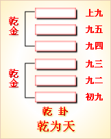

高岛易断 - 01乾为天
高岛易断 01 乾为天
"乾 ［1］ "字本作☰，即此卦三奇，一连纯阳，圆满之形也，后假作三数字。左旁从alt ，中日，上下象其光线，即太阳放光彩之象。乾之性，在人则气力圆满，刚健之义也。《说卦传》曰："乾健也。"天之性至刚，其德至健，其体圆满盈实，其运动强进而无有间断，故以此卦此字充之。
乾：元亨利贞。
此五字文王所系，谓之《彖》辞。《乾》之为天，上文既述之，在人则君也，父也，夫也。盖天包地，君抚民，父育子，夫帅妻，其理一也。"元亨利贞"四者，乾之德也。乾秉纯阳之性，而兼此四德，故其为气也，充满宇宙，无瞬息之间，是即健而无息之谓也。人能法乾之健，自然气力充实，俯仰无愧，孟子所谓浩然之气，"至大至刚，配义与道，无是馁也"。此即被天命德之圣人也。
"元"者始也，大也，仁也，不朽不坏，天地之大德，所以生万物也。元字从二从人，仁字天字亦然，盖在天为元，在人为仁，犹仁者推爱己之心以及于人也。
▲ 甲骨文元
"亨"者通也。物始生而成之义也。在人为礼，人之处世，以礼让为贵，便可使人生爱好之情，即与仁之博爱同。
"利"者宜也，吉也，万物发达而遂其生也。在人为义，见利思义。利与义若相反，而实足以相成，以义为利，利即义也。义 ［2］ 字从羊从我，我牧羊而衣其毛，食其肉，是自食其力，不慕夫外也。"义"者宜也，利之得其正也。利字，《说文》云"从刀从和"，和然后利，字本从和省文，古曰"利者义之和也"。
▲ 甲骨文利
"贞"者正也，兼贞正、贞常、贞固之义。在人为智，盖内有神明在抱之姿，外有坚贞不拔之操，斯有守有为，自得保其终也。故曰"贞固足以干事"。
▲ 甲骨文贞
盖"元亨"，物之始通也，言其时则自春而夏，言其日则自旦而昼，在人则自幼而壮，在草木则自萌芽而至繁盛也；"利贞"，物之成而又复其本也，言其时则自秋而冬，言其日则自映而夕，在人则自壮而耋，在草木则自实而陨也。为人君者，以乾天为法，故御天下之道，莫大于仁育万物，君能体仁，则天下莫不被其德。《文言传》曰："君子体仁，足以长人。"且此卦爻象，亦非专止君上，下至匹夫匹妇，为父为夫者，其卦象、卦义、卦用亦复相同，宜推类而扩充之。"元亨"二字，专就乾之全体德性上说，"利贞"二字，更含圣人教诫之旨。何则？"贞"者正也，"利"者宜也，是贵行其所宜，守其所正也。以人事推之，必有其刚健进取之性，然自恃其勇毅果敢，或将侮人之弱，凌人之柔，欺人之愚，是自陷于过失也。惟贞正而可以克其终也，因深警之曰"利贞"。
《彖传》曰：大哉乾元，万物资始，乃统天。云行雨施，品物流形。大明终始，六位时成，时乘六龙以御天。乾道变化，各正性命，保合太和，乃利贞。首出庶物，万国咸宁。
六十四卦，始于《乾》，终于《未济》。《未济》之卦，《离》火之性上升，坎水之性下降，为水火不相交之象。刚柔失位，事犹未成，故曰《未济》。夫《未济》非不济也，有待而济也。六十四卦，循环不已，是未济之终，即复而为乾天之始。乾为日，阳光所照，万物发育，故坤舆得其照临而水气蒸发，腾而为云，降而为雨，寒暑燥湿，四时循环而无须臾之间。精气凝结，万物流形，是皆始于乾元一气之功德。故孔子赞之曰："大哉乾元，万物资始，乃统天。云行雨施，品物流形。"乾元"者，包括阴阳之称也。凡物必有始，又必有终，今以六爻之位 ［3］ 示其理，则初爻生也，始也，上爻死也，终也。各由其物之性，而不误其时命，谓之"大明终始，六位时成"。夫资始万物者，乾元之功，而乾元亦不自以为功，必使雷、风、水、火、山、泽六子相辅而成，六子亦能承袭天意，以行天之所欲为，而不违其道。天以父道而御六子，谓之"时乘六龙以御天"。乾坤与六子协心，以行变化之道，其间功用无穷，而分量有定。乾坤六子，各全其命，生生变化，谓之"乾道变化，各正性命"。八卦协心，以能保合此造化，谓之"保合太和"。"乃利贞"者，谓日月星辰与四时事物之消长，各不愆其运转，不违其次序，得保此元气之常存，是以利且贞也。圣人体天立极，以一人而统理万机，是曰"首出庶物"。一时庶物沐圣人之化，又得发育繁殖，各有其所，书曰"黎民于变时雍"，万邦协和，即此可见。圣功王道，乾元一德包括尽之矣。
此《彖传》自"大哉"以至"统天"，专说乾天纯阳之德体；自"云行"以至"流形"，专说天地阴阳和合交感之妙用；自"乾道"以至"性命"，专说阴阳变化之功德；至"保合太和"，扩充之于人道，始见教诫劝化之本领，于是三才之大义具备。盖人效法夫天，天之为道，以公明正大为主，则为人君、为人父、为人夫之道，亦宜以公明正大也。
此卦纯阳在上，自有君临万邦之象。圣天子体乾出治，布化宣猷，登进贤良，授之以职，又仰其德如龙者，崇以师傅，参与庶政，如汤之于伊尹，文王之于太公，一时庶职咸熙，风流令行，所谓"保合太和"。君令而臣行，上倡而下和，君臣合德，上下通志。盖君子秉纯阳之德，适当休明之全，虽有不善人，伏于里卦之坤，不敢复露头角，是以四海靖宁，国家安康，万民咸沐浴于深仁厚泽之中，无一天不得其所；于是品物丰饶，国富民裕，兵强食足，兆民输爱国之忱，四国动会归之化，熙熙皞皞，共乐泰平，是乾之时也。
溯昔仁德天皇亲察下民之疾苦，敕百官曰："夫天子犹太阳之照临下土，发育万物，宜代天而布化。天子为天之子，而敬承上天之志，以施行之于下民者也，故朕视众庶犹子，众庶视朕犹父也。今朕尊为天子，万福无极，众庶有或未得其所者，若鳏寡孤独，穷而无告，或孝子而待父母之疾，不得医药，或遭逢水火二难，而不能抚育妻子，或罹疾病，不得药饵，朕岂忍晏然漠视哉！凡而百官，是朕众子中最年长而有德者也，其怜恤子弟，固当与朕同心。今后三年，除天下租税，救万民之疾苦，尔百官其共体此意，所谓一夫不获是予辜。朕实不胜饥渴之忧，愿汝等三年之内，与朕同此艰苦，以实行救荒之政。"百官谨而奉命，皆感戴君恩之厚，于是世风一变，上自权贵，下至贱民，济贫恤穷之风盛行，有余财者，赈济穷民，贷土田者，不收田租，贷家屋者，不征家税，惟以博爱为荣誉。是以兆民无不蒙王泽者，如大旱之得甘雨。迨三年之后，天皇登楼，远见炊烟之飏，欣然则咏《高屋》之御制。迄今追诵敕文，讽咏歌谣，无不感怀圣德也。
盖乘乾御宇之世，风同道一，明良相庆，无复所间；然气运迭更，极盛必衰，或潜龙而不用，或亢龙而有悔，运会之升降，阴阳消长之理，古今同然。故君子之处世，辨六爻之时，玩其辞，即可知天命之向背。凡人筮得此卦，法太阳之循环而不暂息，一切动静之为，要皆奉乾以为法。其宏量卓识，以见龙飞腾得力，正可进而有为之时。然气运之通塞进退各有其宜，初爻虽见其才德如龙，而时机未会，未可进而当事也。二爻可进之时既来，而应以九五，二五各以阳德应之，犹非阴阳相亲也。三爻更近上位而在下，拮据黾勉，颇劳思虑。至四爻，则五爻之盛运将来，察上下之情，审进退之机，待时而动，尚未决也。五爻得盛大之气运，百绩考成，正乘时得位之际也。上爻以乾之气运既过，要宜速退而无悔。九二之"利见大人"，由初九确乎不拔之志操；九三之无咎；由九二之谨慎不伐；九四之无咎，由九三之乾乾惕若；九五之"利见大人"，由九四之能疑能审。故积功累行在于人，而成德达才在于天。至九五，则潜龙之精神既竭，忧疑之念虑全消，无思无为，惟有"同声相应，同气相求"之乐而已，则亢龙之悔，不必待至上九而后知也。是所谓理之不可违，数之不可逃，几之不可不预者也。
《大象》曰：天行健，君子以自强不息。
"天行健"，一言以断定乾天全卦之德。行者运也，讲也，为也，往也，道也；谓天道运行，犹如太阳日日运行，循环不息，无一刻之停止也。君子体天行之刚健，天理浑然，无一毫人欲之间，自强不息，自足当天下万般之事业。然此自强者，亦非暴戾猛进而不知止，妄用健强之谓也。玩索"潜龙"、"亢龙"及用九"无首"之辞，而可知其义也。
【占】 得此卦者，要临事刚健，自强不息，犹天行也。又要包括"元亨利贞"之四德。乾有施德而不计利之意。
○ 女子：筮得此卦，以阴居阳，有刚强过中之嫌。宜慎重也。
○ 天候：二三四五之中，变则必晴也。
○ 买卖：不利买而利卖也。
○ 祸福：谓积善余庆，积不善余殃，恐有不在当代而在后裔也。
○ 常人：有高其身而不知鄙事之虞。
○ 贤者：有知天命而独行是道，恐群阴潜伏，有群小构谗之惧。
高岛易断 初九：潜龙勿用。
《象传》曰：潜龙勿用，阳在下也。
初九以阳居阳。龙之为物，神灵不测，能大能小，能飞能潜，应时而变化者也。爻之取象于龙者，以喻人具灵明之德，变通之才也。"潜龙勿用"四字，周公所系，谓之爻辞，以下仿之。"潜"者隐伏之称，此爻在纯乾之时而居最下，未得遽用，犹龙之时运未来，而隐伏于深渊也，故谓之"潜龙勿用"。占得此爻者，以不得其时，虽有才德，未可进用也。然龙之潜，非终于潜者也；"勿用"者，非竟不用也。龙有神灵之作用，不得其时，蛰而不腾，潜而不现，寂然以养其心神，君子亦待时而动，善成其用。当此勿用之时，晦其才，韬其德，不干进而取祸，亦不迟疑而失机，乐天知命，俨如神龙之蛰而待伸也。盖天地之气有升降，君子之道有行藏，孔子曰"舍之则藏"，正得此卦之旨也。若以小事筮得此卦，宜用妇人而成事，盖以此爻变则为《姤》 ［4］ ，《姤》以"女壮"故也。
【占】 问战征：乾为武人，有战征之象。初爻阳气始动于黄泉，犹是潜伏，故曰"潜龙"。在军事，为威令初发，大军未集，宜按兵以待也。吉。
○ 问营商：龙而潜，曰"勿用"，虽是一种好贸易，只可株守，未可骤动也。
○ 问功名：龙本飞腾发达之物，初爻曰潜，是未得风云之会也。故曰位在下也。
○ 问婚姻：《乾》初变《姤》，《姤》曰"女壮，勿用娶女，"是宜戒之。
○ 问家宅：按震为龙，震在东方，是宅之东，必有渊水，闭塞不济，宜修凿之。
○ 问六甲：生男。
【例】 明治二十二年，某贵显占气运，筮得《乾》之《姤》 ［5］ 。
断曰：《乾》者纯阳之卦，具"元亨得贞"之四德，刚健笃实，而六位不失其时，升降无常，随时应用。处则为潜龙，出则乘飞龙，静则专，动则直。初九曰"潜龙勿用"，盖以阳居阳，其位伏而在下，虽有龙德，未逢飞跃之会，宜法藏勿用。《文言传》赞之曰："龙德而隐者也，不易乎世，不成乎名，遁世无闷，乐则行之，忧则违之，确乎其不可拔，潜龙也。"又曰："潜之为言也，隐而未见，行而未成，是以君子弗用也。"今君占得此卦此爻，夫君当维新之始，以武功有勋劳，现升陆军中将之职，且精儒释二典，所谓学究天人，道兼文武，识见之高朗，学问之深奥，可谓当世无比者也。今当退而不用，正龙德法伏之时，以君才兼文武，仿诸葛卧龙，是有握乾旋坤之略，但恐阳刚独用，未免意气凌人，议论率直，以臻疑谤交集，不容于朝。然此卦所谓"勿用"者，非终不用也。以龙之象，失时则潜，得时即飞。君当韬光匿彩，"遁世无闷"，以待其时之来也。此爻变则为《巽》，《巽》者风也，顺也，入也，俚谚曰"入人之气"即是也。君能以刚方而济以巽顺，使人有坐我春风之想，则上下悦服，而望闻日隆，自得飞龙上升之象。虽今年之气运未亨，至明年，爻进九二，恰值"见龙在田，利见大人"之时，腾达变化，德泽普施，可拭目俟之。
高岛易断 九二：见 ［6］ 龙在田，利见大人。
《象传》曰：见龙在田，德施普也。
此爻阳处二位，故曰九二，阳气发现，有龙出渊，现于地上之义也。在圣人，潜不终潜，有屈而将伸之机。曰"在田"，盖有其德，而犹未居其位也。"大人"者，以其有人君之德，故称大人。此爻变则为《离》，《离》文明之象，卦变为《同人》，以文明之人而与人同，故曰"利见大人"。盖刚健者，性之德；文明者，学之成；中者居之宜；正者位之得。然有其德，而犹不自以为足，欲见九五之大人，盖期勉进其见识，相与赞成天下事业，是龙德始见于世，立身显名之时也。五者君上之定位，二者臣下之定位，此卦二五皆以阳刚相应者，盖有故也。《乾》之为卦，其体则纯阳圆满，其时则刚健日进，其爻则二五共备刚中之德，同德相助，谓之两刚相应之例。《乾》之卦，处九五之位，以明德御众贤，九二之臣，承奉君意，以飞力于国家，并法天德，以治国家，以其志望之同，而两阳相应如是。上下之大人，合志而济世，则其德化之所及，无有穷极也。又此爻备三才之妙义，"现龙"者，谓得天之时；"在田"者，谓得地之利；"利见大人"者，谓得人之和也。
【占】 问战征：龙本灵物，初爻曰"潜"，是谓伏兵；二爻曰"现"，则发现而出也。"在田"则必列阵于田野空旷之地。《传》曰"德施普也"，是必战胜而行赏也。
○ 问营商：爻曰"现龙在田"，知其货物大般是米麦丝棉之类。现者，谓物价发动开涨；"利见大人"者，谓当有官场出而购买也。
○ 问功名：谓伏处田间者，当乘时而进用也，且得贵人之助，故曰"利见大人"。
○ 问婚姻：二五相应，五居尊位，婿家必贵。曰"现龙"，必是新进少年也。大吉。
○ 问六甲：生男，且主贵。
【例】 明治之初，自占一身之方向，筮得《乾》之《同人》。
断曰：《乾》者纯阳之卦，六爻皆取象于龙，群贤在朝之时也。我国自德川氏治世以来，殆三百年，积弊之极，世运一变，得见今日维新之盛业。虽由气运之消长，实赖此龙德大人，各振其才力，匡辅王朝，致此中兴之伟业者也。是则今日之政治，即乾为天之世也。余曩得罪罹狱者七年，后遂获释，尔来黾勉拮据，四年而得十余万金，余不敢自恃意中，亦幸逢一时之气运，克获资产。然聚散离合，理之所不免，若聚而不散，谓之守财奴，即贻之子孙，往往徒供骄奢，何能久守？余惟当今在位之君子，在昔尊王室，废藩政，皆出万死而得一生者也。历今三十年来，王事鞅掌，莫敢或遑，孜孜以襄国是，余虽不肖，亦岂敢犹耽安逸，徒望富有哉？今筮得九二之辞曰"现龙在田"，谓余曩时出幽囚而再见天日，得以振兴家业也；"利见大人"，谓余尝占筮国家大计，得与当路大人交接，并得领其议论，往往外使归朝，投宿余邸，藉是得悉海外形势。凡此皆足针砭余之固陋，启迪知识，为《益》洵不少也。余乃法《同人》之卦意（《同人》之占载同卦之附录），创成铁道、瓦斯、学校、邮船四大业，其原实得于此也。盖《乾》之为卦，以天行之健，有自强不息之象，人能刚健而无须臾之怠忽，惟曰孜孜，自有成功之日也。
【例】 明治二十七年，占我国与清国战争之结果如何，筮得《乾》之《同人》。
断曰：《乾》者，两"乾"相接之象，以人事观之，有刚健纯粹之大人相接之象。今两国战争，彼国虑生内乱，必将遣首相李鸿章东来，与我伊藤首相相盟。谓之"现龙在田，利见大人"。《乾》者纯阳，四月之卦也，和议之成，其在明年四月乎？乃以此筮呈之伊藤首相。
二十八年四月，李鸿章果来我长门下关，与伊藤首相相见，和议始成。先是明治十七年，伊藤伯奉钦使之命，差遣清国，筮得《乾》之五爻，渡清之后，与李氏会，全命而还。今得二爻，知李氏之必来。天命不违如此，岂可不畏乎？
高岛易断 九三：君子终日乾乾，夕惕 ［7］ 若，厉无咎 ［8］ 。
《象传》曰：终日乾乾，反复道也。
九三以阳居阳，故才强而志亦强，具刚健之性。然位不得其中，居内卦之上，奉外卦而治下，任大而责重，若违上意，必得谴责，若失下情，必受众怨。上下之际，祸福之交，成败之所由决也。盖九三所居之地，正当危惧之时，惟"终日乾乾"，戒慎恐惧，可以免咎。六爻之中，三爻配三才而为人位，此爻以乾德居六十四卦人道之首位，君子之象也，故不称大人，而称"君子"。初之"潜"，二之"现"，四之"跃"，五之"飞"，皆有待于此爻也。故修我德，勤我业，"终日乾乾"，如临危地，戒慎畏惧，而修之于身，施之于事，能通于下之志，能虑天下之变，则虽身居危地，处置得宜，可变危而为安也，故曰"厉无咎"。所谓"反复道"者，即反复叮咛，重复践行之意。又此爻变则为《履》，《履》之六三曰"履虎尾"，可以见危殆之地位也。三者日之终，故曰"夕"；此爻变则为《兑》，《兑》者西也，日之在西，即夕之象也。
【占】 问战征：危事也。爻曰"终曰乾乾，夕惕若"，是能临事而惧者也，故虽危无咎。
○ 问功名：九三处下卦之极，其位犹卑，功名未显也，故称君子；在忧危之地，故曰乾乾惕若，斯可免咎。
○ 问营商：居不中之位，履得刚之险，度其贸易必是危地，须日夜防备，可脱险而获利也。
○ 问家宅：观爻象，必须谨慎持身，勤俭保家，斯无灾害。
○ 问婚嫁：三以六为应，三位卑，六位尊，尊则不免亢而得悔，是不宜攀结高亲也。
○ 问六甲：生男。产时恐稍有危惧，恐终无咎。
【例】 明治十六年某月，谒松方大藏卿，卿曰：今春以来，深雪霖雨，气殊甚，余窃恐年谷之不登，子幸占其吉凶。筮得《乾》之《履》。
断曰：《乾》者纯阳之卦，故曰乾为天，是乾者天也。取象于太阳，且六爻皆阳无一阴，其辞曰"终曰乾乾"者，乾乾犹干干也，即旱魃之义也。今九三变而互卦 ［9］ 见《离》之日，是全卦无雨水之象，可知本年必旱。"夕惕若"者，谓炎热至夜而不去也。虽人民多畏久旱，而五谷丰熟，故曰"厉无咎"也，且二爻曰"现龙在田"，即田稻丰登之象；今三爻变《离》，见离火照彻田面，纵旱不为虐，是以无咎。
卿曰：占之验与否姑舍是，其于活断，可谓老成练熟者也。
高岛易断 九四：或跃在渊，无咎。
《象传》曰：或跃在渊，进无咎也。
九四以阳居阴，且近君位，其将进者阳之情，其将退者阴之志，故疑而未决也；然阳气方进，龙之一跃，自有升天之象。或者，疑而未定之辞，"或跃"者，将进而未进也。"在渊"者，欲进而复退。渊为空虚之地，上与天通气，且渊有水，龙得水便易于腾跃，与二爻"在田"不同。兹虽一跃而后在渊，知终必跃而升天，故曰"无咎"。《象》辞加一进字，益见乘时进必无咎也。人能审时势之可否，察人心之向背，待时而出，见可而动，其进也非贪位，其退也非沽名，可以投事机之会，可以免失身之辱。所谓无咎者，亦勉人之不失其时也。四爻越内卦迁外卦之处，故有进之意。又此爻变，外卦为《巽》，《说卦传》曰："巽为时退，为不果"，故有犹豫之象。
【占】 问战征：观爻象，行军前进，必有渊水阻隔，宜设船筏；或临渊有敌军埋伏，宜预设备，乃得无咎。
○ 问营商：爻曰"或跃在渊"，若在贩运海货，恐罹波涛之险，或者物价一时腾涨。爻曰"无咎"，可保无害。
○ 问功名：有一举成名之象，大吉。
○ 问家宅：渊者水也，跃者飞升也，必家道有一时振兴之象。
○ 问六甲：生男。
【例】 明治二十四年二月，门人清水纯直来告曰：今府下第十五区代议士之选举，鸠山角田二氏，旗鼓对竖，竞争未决。余久知鸠山氏，因请占其胜败。筮得《乾》之《小畜》。
断曰：此卦六爻皆取象于龙，群龙聚集之时也。以此爻阳气旺盛，进而应选，本可必得。然九阳爻，四阴位，阳主进，阴主退，显见进退未定，明明将进而复退也。且上卦变而为《巽》，《巽》为疑，为不果，为进退；四属阴位，变则互卦含《离》明，应爻初九有渊之象，见此人学术渊深，具刚强之德，然其心怀迟疑，亦未尝冀望必选也。细玩爻辞，所谓"或跃"者，固不能不应其选；所谓"在渊"者，恐此番必不能得其选也。某氏哑然而去。
后果如此占。
【例】 二十八年冬至，占明年我国外交之气运，筮得《乾》之《小畜》。
断曰：《乾》之为卦，阳气循回，无一息之间断，纯全刚健之时也。今我国与清国交战，是欧美各邦所注视，此后各邦必将窥我举动，群相猜忌嫌恶，亦势所必至也。故我国与各帮，益当熟察彼我情形，揆度内外时势，使彼绝观觎之念，敦和好之情，蓄势审机，正在此时也。爻辞曰"或跃"，曰"在渊"，示我法神龙之变化，或进或退，神化莫测，乃得无咎也。
高岛易断 九五：飞龙在天，利见大人。
《象传》曰：飞龙在天，大人造也。
五爻刚健中正而居尊位，下与九二之臣，同德相应，见大人而助其治化，谓有圣人之德，而居天子之位，恩泽被于生民者也。盖"大宝曰位"，虽有其德，苟无其位，不能利济天下。"飞龙在天"者，谓龙飞上天，云行雨施，神变化而泽及万物。圣人在位，天下被其泽，万物遂其生，故取象于此。所谓大人者，"与天地合其德，与日月合其明，与四是合其序，与鬼神合其吉凶"。以其备龙之德，腾跃而居天位，为万物所瞻抑，故天下利见。《象传》曰"飞龙在天，大人造也，"造犹作也，即所谓"圣人作而万物睹"也。
【占】 问战征：九五尊位，必是天子亲征，王师伐罪，故曰"大人造也"。
○ 问营商：九五辰在申，上值毕 ［10］ ，附星咸池 ［11］ 。咸池者苍龙之舍，咸池亦名五车，主稻黍豆麦，度其贸易，定在五谷之属。曰"飞龙"者，知物价之飞生也；曰"利见大人"，知其贩运或出自政府之命也。
○ 问功名：有云宵直达之兆。
○ 问疾病：有上应天召之象，不吉。
○ 问六甲：生男，主贵。
【例】 明治十八年二月二十八日，伊藤伯奉命赴清，发横滨港，为昨年朝鲜事件，与清廷议事也。余为问结局如何，筮得《乾》之《大畜》，临行欲呈之于伯，因阻道者众，遂不得呈，乃更使人赍之于天津。
断曰：九五之大人，与九二之大人，其位相应。《易》以阴阳相应为例，二五共属阳爻，以我国之大人，与清国之大人相会论事，其必能深虑远谋，两国平和。且本卦五爻之背，即《坤》之五爻，其爻辞曰"黄裳，元吉"，是含彼我大人之心忧，关黄色人种之安危，互相扶持，两国大人留心于此，是即两国人民之幸庆也。
《乾》之《大象》曰："君子以自强不息。"凡筮得此卦者，要知太阳之运行，无须臾之间断，故以进为先，可以制胜也。今我国先派使臣，则先鞭在我，我进而论事，以法乾之健行，故其胜在我，必可得好结果也。
时横滨商人立川矶兵卫，以事赴天津，乃托以此占，就书记官伊东氏，呈之于伊藤伯。时因国议不协，伊藤伯将整装归朝，偶见此占，大有所感，再开和战一决之议，乃得如议，不辱使命而旋。
【例】 明治十九年十二月，占明年铁道局气运，筮得《乾》之《大有》，呈之于铁道局长井上胜君。
断曰：《乾》三奇一连，纯阳之卦，五爻又属阳位，卦德莫盛于此，铁道局长气运，可谓盛矣。此爻得天时、地利、人和者三，足见世人注目于铁道。凡物产之繁殖，运输之交通，军事之防护，人民之往来，均沾利益，其盛运诚无可比也。"飞龙在天"者，喻汽车之飞行也；汽车通行，无分贵贱，即在大人之尊，亦同登乘，故曰"利见大人"。先是明治十四年，占未来之国会，预判二十年铁道可以盛行，今得此卦，适与相合，此后铁道事业之盛大，可期而待也。
高岛易断 上九：亢龙有悔。
《象传》曰：亢龙有悔，盈不可久也。
上爻以阳居《乾》卦之极，极则太过，龙飞过高，故曰"亢"，以高致危，故"有悔"。此卦言龙始而"潜"，继而"现"，中而"跃"，终而"飞"，飞则已当全盛，过此则宜复潜，则不特可免此日之悔，即可冀后日之再飞。犹人臣居势位之极，当知退避之意，斯富贵可以长保也，否则，知进而不知退，则鲜有不蒙咎者矣，故曰"盈不可久也。"此爻变则为《夬》，《夬》者，决也，日中则昃，月盈则亏，天理之必然也。故当斯之时，宜因悔思改，见机而退，斯得之矣。若夫尧舜之禅让，范蠡张良之功成身退，皆不极亢而善其终者也。
【占】 问战征：上九居《乾》之极，阳极于上，故"亢"；亢则因胜而骄，是以"有悔"也。故《传》曰"盈不可久"，知不能持久也。
○ 问营商："亢"者，太过也，凡卖买之道，不可过于求盈也，过盈则必有亏，故曰"不可久"也。
○ 问功名：上九之位已极，宜反而自退，否则必致满而遭损。
○ 问家宅：是必宅基太高，太高则危，亦可惧也。
○ 问疾病：是龙阳上升之症 ［12］ 。《传》曰"盈不可久"，知命在旦夕间矣。可危。
○ 问婚嫁：不利。
○ 问六甲：生男，恐不育。
【例】 余以每年冬至，占庙堂诸贤进退，及亲属知己等来岁气运，送致之于其人为例。明治十九年，占某贵显翌年气运，筮得《乾》之《夬》。
断曰：《乾》者至大至刚至健，为纯阳之卦，在人则居高位，膺显爵，声名洋溢，正当功成身退之候。今阁下筮得此卦，譬如飞龙升天，高出云霄，反不能布施雨泽，故曰"亢龙有悔"。阁下英雄达识，老练世事，前日之功名赫耀，今盛运已过，惟宜急流勇退，救目前之亢，再期他日之飞，辞职谢荣，遵养时晦，斯无咎也。后果如此占。
用九：见群龙无首，吉。
《象传》曰：用九，天德不可为首也。
"用九"者，为六十四卦阳爻之变，示阳刚之用例，即《易》中百九十二阳爻之通例也。"用"者变动之象，"九"者阳数之终，《乾》卦全体皆阳，阳极则变，故曰"用九"。"见"者，《乾》六爻皆取象于龙，曰"潜"，曰"跃"，曰"飞"，显然昭著，故曰"见"。"首"者上也，《易》以《乾》为首，"无首"者，言而有出夫其上者矣。卦以得变为吉，《乾》卦纯阳无变，故六爻未尝言吉；用九则动而将变，故曰吉。《象传》曰用九天德，以《乾》卦纯阳，不亲阴柔，浑然无德，亦即乾为天之义。"不可为首"者，言无以尚之也。夫《乾》以六龙各有行云布雨之势，在人则谓群贤汇萃，同心翊赞，以匡国家，以显功名，各宜谦让巽顺，不矜不伐，或互竞才智，争夸首功，便是凶象。《易》曰"群龙无首，吉"，正所以垂诫之也。《象传》曰："用九，天德不可为首也。"要必知舜之玄德升闻，而好问察迩，卑牧自下，斯以为至矣。
周易 - 01乾为天

|
 |

|

|
| 本卦 | 互卦 | 错卦 | 综卦 |
| 第1卦：乾卦(乾为天)本卦 | 第1卦：乾卦(乾为天) | 第2卦：坤卦(坤为地) | 第1卦：乾卦(乾为天) |
周易第一卦详解
乾卦原文
乾。元，亨，利，贞。
象曰：天行健，君子以自强不息。
白话文解释
乾卦：大吉大利，吉利的贞卜。
《象辞》说：天道刚健，运行不已。君子观此卦象，从而以天为法，自强不息。
《断易天机》解
乾象征天，六阳爻构成乾卦，为《易经》六十四卦之首。纯阳刚建，其性刚强，其行劲健，大通而至正，兆示大通而有利，但须行正道，方可永远亨通。
北宋易学家邵雍解
刚健旺盛，发育之功；完事顺利，谨防太强。
得此卦者，天行刚健，自强不息，名利双收之象，宜把握机会，争取成果。女人得此卦则有过于刚直之嫌。
台湾国学大儒傅佩荣解
时运：临事刚健，自强不息。
财运：施比受有福，不利买而利卖。
家宅：积善有余庆；女子过刚宜慎重。
身体：保健有恒。
传统解卦
这个卦是同卦（下乾上乾）相叠。象征天，喻龙（德才的君子），又象征纯粹的阳和健，表明兴盛强健。乾卦是根据万物变通的道理，以"元、亨、利、贞"为卦辞，表示吉祥如意，教导人遵守天道的德行。
大象：天行刚健，自强不息。
运势：飞龙在天，名利双收之象，宜把握机会，争取成果。
事业：大吉大利，万事如意，心想事成，自有天佑，春风得意，事业如日中天。但阳气已达顶点，盛极必衰，务须提高警惕，小心谨慎。力戒骄傲，冷静处世，心境平和，如是则能充分发挥才智，保证事业成功。
经商：十分顺利，有发展向上的大好机会。但切勿操之过急，宜冷静分析形势，把握时机，坚持商业道德，冷静对待中途出现的困难，定会有满意的结果。
求名：潜在能力尚未充分发挥，只要进一步努力，克服骄傲自满情绪，进业修德，以渊博学识和高尚品质，成君子之名。
婚恋：阳盛阴衰，但刚柔可相济，形成美满结果。女性温柔者更佳。
决策：可成就大的事业。坚持此卦的刚健、正直、公允的实质，修养德行，积累知识，坚定信念，自强不息，必能克服困难，消除灾难。
第一卦的哲学含义
乾卦所包含的范围是：
凡是积极向上的、刚健有力的、权威的、圆形的、男性长辈、珍贵的、富有的、寒冷的、坚硬易碎的、在上的等事物，都归于乾卦。六十四卦中乾用来象征天、阳、日、君、父、夫、圆、玉、金、冰、寒、马、赤色、快速、快车、不知疲倦等。
乾与人体对应的部位是：
头、首、胸部、大肠、肺、右足、右下腹、精液、男性生殖器等。
六十四卦之中的乾，是两个乾卦同卦相叠而成，象征天，用龙来喻指有德才的君子，又象征纯粹的阳和健，表明兴盛强健。乾卦是根据万物变通的道理，喻示吉祥如意，教导人们顺天道而行。
乾卦是六十四卦中的第一卦，《序卦》讲述了六十四卦的排列次序，其指出："有天地，然后万物生焉。"意思是以乾卦为天，以坤卦为地。有天地才能化生万物。乾代表阳刚劲健的主动力，坤则是承受力，两者相摩相荡而变化生出万物。
《象》中这样解释乾卦：天行健，君子以自强不息。这里指出：天道运行周而复始，永无止息，谁也不能阻挡，君子应效法天道，自立自强，不停地奋斗下去。
乾卦属于上上卦。《象》中这样来断此卦：困龙得水好运交，不由喜气上眉梢，一切谋望皆如意，向后时运渐渐高。
周易第一卦初九爻详解
初九爻辞
初九。潜龙勿用。
象曰：潜龙勿用，阳在下也。
白话文解释
初九：潜藏的龙，无法施展。
《象辞》说：潜藏的龙，无法施展，因为初九阳爻处在一卦的下位，所以压抑难伸。
北宋易学家邵雍解
平：得此爻者，宜沉稳待机，若一动作即生灾疾，谋事不利，谨防小人。做官的会有阻力。经商的会有阻滞。女命则兴家业，孕生子。
台湾国学大儒傅佩荣解
时运：培养实力，等待机会。
财运：宜守不宜攻。
家宅：娶妻小心。
身体：保养为宜。
初九变卦

初九爻动变得周易第44卦：天风姤。这个卦是异卦（下巽上乾）相叠。乾为天，巽为风。天下有风，吹遍大地，阴阳交合，万物茂盛。姤（gǒu）卦与夬卦相反，互为"综卦"。姤即媾，阴阳相遇。但五阳一阴，不能长久相处。
初九爻的哲学含义
乾卦第一爻爻辞释义：初九：潜龙勿用。经文意思是：身居下位，时机还没有成熟，所以应当像潜藏的龙一样不要施展你的才干。
"初九"是本爻的序位。我们前面说过，六爻由下而上的位序是初、二、三、四、五、上。阳爻用"九"来表示，阴爻用"六"来表示。初九就是指位序最下的阳爻。
初九：潜龙勿用。的意思是：龙潜伏着，不要有所作为。
从卦象上看，初九属于阳爻居于刚位，属于得位。而九二的位置也是阳爻，位于初九之上，两爻同性相斥，属于敌比关系。初九虽然不甘居下，但是被九二所压制，刚健的阳气被埋在了地下。初九纵然有再高的才能，位置低，即使不服气，也要学会隐忍。
潜伏在水中的巨龙，发挥不出作用，是因为地位低下。这个卦象隐喻事物在发展之初，虽然有发展的势头，但是比较弱小，所以应该小心谨慎，不可轻动。
周易第一卦九二爻详解
九二爻辞
九二。见龙在田，利见大人。
象曰：见龙在田，德施普也。
白话文解释
九二：龙出现在大地上，有利于会见贵族王公。
《象辞》说：龙出现在大地上，喻指君子走出了压抑的低谷，正开始谋取能够广泛施予德泽的社会地位。
北宋易学家邵雍解
吉：得此爻者，会得到贵人的提拔。做官的会遇到明主，身居要职。读书人考试能获得佳绩。经商者获利。女命逢之，则又富又贵。
台湾国学大儒傅佩荣解
时运：得贵人之助，有发展机会。
财运：开始涨价，官方采购。
家宅：婚姻大吉。
身体：运动健身。
九二变卦

九二爻动变得周易第13卦：天火同人。这个卦是异卦（下离上乾）相叠，乾为天，为君；离为火，为臣民百姓，上天下火，火性上升，同于天，上下和同，同舟共济，人际关系和谐，天下大同。
九二爻的哲学含义
九二：见龙在田，利见大人。爻辞释义：龙出现在田野之上，有利于见到大人物来发展自己。
见：在这里有两种不同的理解，一种是出现的意思，一种是见到的意思。
本爻辞的意思是：龙出现在田野上，适宜见到大人。
从卦象上看，九二属于阳爻居于阴位，属于失位，但是位于下卦之中，居中。二为地之上，表示龙已经崭露头角，才华受到注意了，这时见到大人是有利的。因为这个时候虽然具备了一定的能力，但是还很有限，如果有遇到大人物，可以获得进一步的磨炼和栽培，另外若得到大人物的提携，会更加顺利。这个大人就是自己的贵人。最典铟的例子就是舜的经历，舜在耕田、捕负时，由于表现优秀，被尧所赏识，舜就是"利见大人"。
如果从人的一生来宥，这一阶段相当于25-35岁左右，表明经过一定时期的学习和积累，具备了一定的能力，到了渐露头角、一展身手的时候，这个时候，若是有贵人相助，会更有利于成功。
周易第一卦九三爻详解详解
九三爻辞
九三。君子终日乾乾，夕惕若；厉，无咎。
象曰：终日乾乾，反复道也。
白话文解释
九三：有才德的君子始终是白天勤奋努力，夜晚戒惧反省，虽然处境艰难，但终究没有灾难。
《象辞》说：君子整日里勤奋努力，意思是反复行道，坚持不舍。
北宋易学家邵雍解
平：得此爻者，会往来不停，财利难获，凡事不认真计划，躁动者会有损失。做官的会身兼重职，且事多繁冗，如果能保持忧虑和谨慎的态度则没有过失。女命逢之，性躁，难成为贤内助。
台湾国学大儒傅佩荣解
时运：功名未显，戒慎免咎。
财运：日夜防范，可脱险获利。
家宅：勤俭保家；不宜攀结高亲。
身体：小心保养。
九三变卦

九三爻动变得周易第10卦：天泽履。这个卦是异卦（下兑上乾）相叠，乾为天，兑为泽，以天喻君，以泽喻民，原文："履（踩）虎尾，不咥（咬）人"。因此，结果吉利。君上民下，各得其位。兑柔遇乾刚，所履危。履意为实践，卦义是脚踏实地的向前进取的意思。
九三爻的哲学含义：
爻辞释义：乾乾：本是指太阳的运行不止，在这里比喻君子勤勉不懈。惕：有敬的意思，小心谨慎、警锡,，夕惕若：是说晚上也要保持警惕的样子。厉：是指危险。咎：是指灾害。历无咎：是说虽然存在着危险，但是不会造成灾难。
本爻辞的意思是：君子整天自强不息，勤勉不懈，晚上还时刻保持警惕。这样虽然会存在着危险，但是不会造成灾难。
九三是阳爻，也称为刚爻，在《易经》的用例之中，刚爻为君子，柔爻为小人。《系辞》中说：二多誉，四多惧，三多凶，五多功"本爻也是处于"多凶"之中。《文言》之中这样解释此爻：九三本身过剛，做亊又不适中，成了上不挨天，下不挨地的人，所以需要有自强不息的精神，并根据变化了的时亊而随时加以警惕，这样做，即使遇到危险，也不会有灾难的发生。
从卦象上看，九三位于下卦，无法确知下—步的进展，唯有本者乾卦的精神，日夜精进。虽然从初九和九二的发展来看，阳气是呈增长趋势的，由"潜龙勿用"到"见龙在田"，按照这个趋势，阳气应该逐渐上升，但是，亊情发展并不是如此简单，事情并不一直都一帆风顺的。不过如果保持勤勉和警惕，即使有危险，也不会造成灾难。
《象》中这样解释本爻："终日乾乾"，反复道也。这里指出："整天自强不息"，是因为要避免出现反复，不敢有丝毫大意。
"九三"这个位置，位于下卦的结束，而且乾卦之中，从前两卦的趋势来看，正处于阳气上升阶段，但是由于在下卦，可以前虽还不明朗，甚至可以说是前途未卜。所以要保持一种勤奋而警觉的心理状态，也是亊功上正在进取以求成就者要经历的一个心理阶段。
这个阶段的人和刚刚毕业的学生有些相像，刚刚学业有成，自信满满，但是，社会是一个江湖，是否能在这里阳出一番天地还是未知数。进入社会中遇到的困难，远超出在学校时单纯的想像，会发现许多的前所未知的困难。
从人的一生来看，本爻所代表的时期应该是35-45岁左右，这个时期人生事业处于不上不下、压力最大的时期，在这个时期，满要坚持不懈，才能取得成功，否则，就可能就会半途而废了。
周易第一卦九四爻详解详解
九四爻辞
九四。或跃在渊，无咎。
象曰：或跃在渊，进无咎也。
白话文解释
九四：龙也许跳进深潭，没有灾难。
《象辞》说：龙也许跳进深潭，表示可以有所作为而没有灾难。
北宋易学家邵雍解
平：得此爻者，百为艰难。做官的会停缺待职，等待机会。女命逢之，则安乐富贵也。
台湾国学大儒傅佩荣解
时运：一举成名。
财运：物价高涨，可保无咎。
家宅：有一时振兴之象。
身体：继续健身。
九四变卦
九四爻动变得周易第9卦：风天小畜。这个卦是异卦（下乾上巽）相叠，乾为天，巽为风。喻风调雨顺，谷物滋长，故卦名小畜（蓄）。力量有限，须待发展到一定程度，才可大有作为。
九四爻的哲学含义：
爻辞释义：本爻辞的意思是：龙或跃上天空，或停留在深渊，只要根据形势的需要而前进，就不会有错误。
九四：或跃在渊，无咎。人生启示
此爻给人的启示是：进退有据。
从卦象上看，九四开始进入上卦，属于阳爻居于柔位，失位，显得不够安稳，所以卦辞中出现了"或"，并不确定。但是，这种不确定，或上或潜，由于是配合时位而变，反而是正确的表现，所以没有过错。
在乾卦之中，前几爻是指龙要隐忍、精进，到了第四爻，进人了上卦，"龙"主观上觉得自己的力量积聚得可以了，因此有时就跃跃欲试，想一试身手。但是，因为情况并不是十分有利，因为九四处于阳气曲折发展、上升的时期，阳气没有强大的足可以战胜阴气的程度，所以九四虽然想蠢蠢欲动，但是要把握好情况，该进时则进，该退时则退。
周易第一卦九五爻详解详解
九五爻辞
九五。飞龙在天，利见大人。
象曰：飞龙在天，大人造也。
白话文解释
九五：龙飞腾在空中，有利于会见贵族王公。
《象辞》说：龙飞腾在空中，意味着君子大有所为。
北宋易学家邵雍解
吉：得此爻者，会遇到贵人，谋遂志得。做官的会飞黄腾达。女命则兼男权，难免孤独。
台湾国学大儒傅佩荣解
时运：直上云霄。
财运：五谷之类的贸易，物价飞升，有官府支持。
家宅：富贵之家。
身体：蒙天所召，不吉。
九五变卦
九五爻动变得周易第14卦：火天大有。这个卦是异卦（下乾上离）相叠。上卦为离，为火；下卦为乾，为天。火在天上，普照万物，万民归顺，顺天依时，大有所成。
九五爻的哲学含义：
从卦象上看，九五属于阳爻居于刚位，五爻是君主之位，是整个卦中最高领导之位。纵观从初九、九二、九三、九四，到九五这里，表达了事情发展的一个过程，龙所象征的阳气经过与阴气的一番抗争，终于飞上天空，像正午的阳光一样普照大地，万物沐浴在温暖的阳光之中，好运气正是如日中天。
《象》中这样解释本爻："飞龙在天"，大人造也。这里指出："龙飞翔在天空"，象征德高势隆的大人物一定会有所作为。
如果从个人的发展来讲，九五这一爻好比一个有才能的人经过一番努力，终于迎来了大展宏图的机会。本人登上了高位，可以大有一番作为了。占得此爻，表示事业蒸蒸日上，人生得意，运势非常好。
如果从一个国家的角度来看，占得此卦，可能表示国家将在出现重大事件，举行盛大的活动，国家首脑会亲临现场。
周易第一卦上九爻详解详解
上九爻辞
上九。亢龙有悔。
象曰：亢龙有悔，盈不可久也。
白话文解释
上九：升腾到极限的龙会有灾祸之困。
《象辞》说：升腾到极限的龙会有灾祸之困，这是警戒人们崇高、盈满是不可能长久保持的。
北宋易学家邵雍解
凶：得此爻者，有过刚取凶之祸，五十以后者不寿。做官的会退职，或遭贬。女命逢之，其性必悍，难成为贤内助。
台湾国学大儒傅佩荣解
时运：由满招损，退而自省。
财运：过盈则必有亏。
家宅：婚嫁不利。
身体：命在旦夕。
上九变卦

上九爻动变得周易第43卦：泽天夬。这个卦是异卦（下乾上兑）相叠。乾为天为健；兑为泽为悦。泽气上升，决注成雨，雨施大地，滋润万物。五阳去一阴，去之不难，决（去之意）即可，故名为夬（guài），夬即决。
上九爻的哲学含义：
从卦象上看，此爻处于上九的位序，身居全卦最上一爻，阳爻处于柔位，属于失位，所以情势对其很不利。"亢龙"是说龙飞得太高了，阳气盛到了极点。物极必反，阳极则衰，如日中则侧，不可能长久下去。
《文言》中说："亢"之为言也，知进而不知退，知存而不知亡，知得而不知丧，其唯圣人乎？知进退存亡，而不失其正者，其唯圣人乎？
这段话的意思是说："亢"的含义，是指只知道前进，却不懂得后退；只知道生存，却不知道还有死亡；只知道得到东西，却不知道还有丧失的时候；看来唯有圣人才知道这一切。知道进退生存的道理，就会在处理这些问题上，不失正道原则，这岂不是唯有圣人才能做到吗？
《象》中这样说道："亢龙有悔"，盈不可久也。这里指出：龙飞得过高，会有灾祸或后悔之事"，因为物极必反，事物发展到了尽头，必将走向自己的反反向。